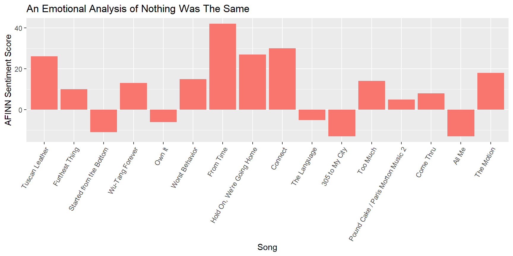
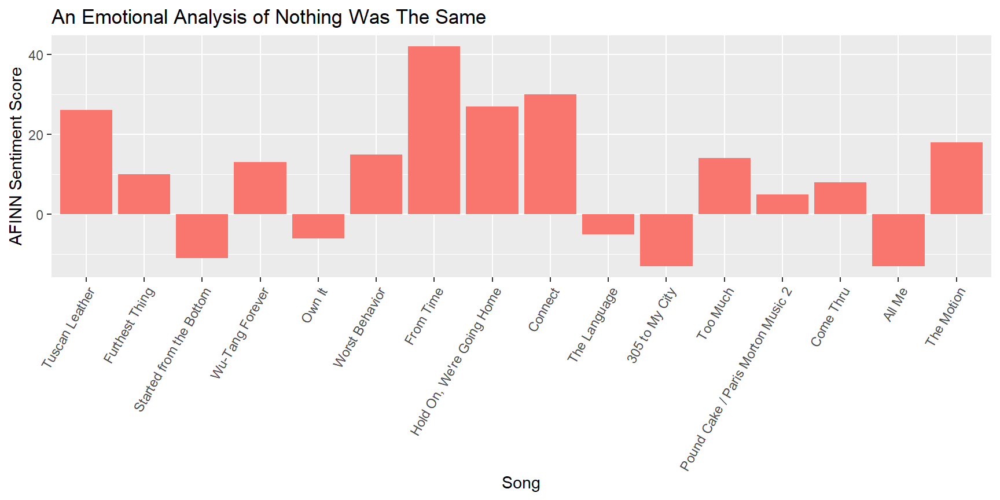

Simran’s Music Analysis
Introduction
I used data from Genius to compile a spreadsheet of all of Drake’s lyrics from his albums because I wanted to explore trends in the sentiments. I used “lexicon” in tidytext. Given that Drake’s lyrics contain a lot of slang, obviously this lexicon could not provide a wholly accurate depiction of the sentiments in his lyrics. Thus this analysis is mostly exploratory in nature.
Genius had data for the albums Comeback Season, If You’re Reading This It’s Too Late, More Life, Nothing Was the Same, Room for Improvement, So Far Gone, Take Care, Thank Me Later, Views, and Scorpion. There were a few other albums listed on the website, but those were either too short to be significant for this analysis, or they were almost identical to another album with only a handful of added songs. Singles that are not tied to an album were not included. For the sake of brevity in writing the code and for the appearance of the graphs, If You’re Reading This It’s Too Late is simplified to IYRTITL and Nothing Was the Same is simplifeid to NWTS.
tf-idf score
The letters tf stands for term frequency whereas idf stands for inverse document frequency. A tf-idf score is essentially the frequency of a word in a document given the frequency of word in a whole collection of documents. For this analysis, that means a word with a high tf-idf score for an album appears more uniquely frequently in that album than any other album. We can get a general sense of how an album distinguishes itself by looking at words with the highest tf-idf scores.
## Selecting by tf_idf
Several qualitative observations can be made from this. IYRTITL has words like “preach” and “woes” as well as “lonely” and “leaving” as its top words, perhaps indicating that it is an emotional album with a range of positive and negative emotions. We can also see the trend of the sonic qualities of his words over time with his use of unique words such as “skrrt”, “ga”, “mo”, “ay”, etc.
bing positive and negative sentiments
The lexicon package has a lexicon called bing that codes whether a word is positive or negative. This graph shows the proportion positive and negative words for each album.
## Joining, by = "album"
afinn sentiment score
The AFINN score also exists within the lexicon package, and it measures the intensity of a word from -5 to 5. A word with a -5 score would be considered amongst the most foul in the English language.
From looking at the list of words with low afinn scores, I could already tell that hip-hop music vernacular would not translate because some low-ranked words could actually mean something positive with different context. Given the high rate of these words in songs, I made an executive decision to remove them so that they would not affect the score.
I organized the songs by album and then the order in which they appeared in the album, then assigned the song a number so I could perform a time series analysis. Song 1 is the first song in his first project Room for Improvement and song 203 is his last song in Scorpion.
## Joining, by = "word"
## Joining, by = "word"## Warning: Column `word` joining character vector and factor, coercing into
## character vector## Joining, by = "song"
I included more graphs for a few individual albums.


 

I also included an emotional analysis of what is popularly deemed one of Drake’s saddest songs, Marvin’s Room.
## Joining, by = "word"## Joining, by = "line"
nrc emotional lexicon
To get a better grasp of the specific emotions, I tracked Drake’s lyrics using the nrc lexicon. This lexicon has eight basic emotions: anger, fear, anticipation, trust, surprise, sadness, joy, positive, and negative. In the first graph, which is the top albums of each sentiment, take notice in how Drake’s older albums dominate the lists. This suggests that his older albums had more emotional substance than his newer ones.
## Joining, by = "word"
## Joining, by = "word"## Selecting by n
## Selecting by n
## Joining, by = "song"## Joining, by = "word"## Joining, by = "song"## Selecting by n
In relation to the above, I also wrote code to capture the top song of a few of the sentiments.
saddest songs
| album | song | n |
|---|---|---|
| Take Care | Shot for Me | 0.0290557 |
| Take Care | Buried Alive | 0.0281385 |
| More Life | Jorja Interlude | 0.0261194 |
| Comeback Season | Intro | 0.0250000 |
| Comeback Season | The Last Hope | 0.0249307 |
| Room for Improvement | U.P.A. | 0.0240964 |
| Comeback Season | Asthma Team | 0.0234604 |
| So Far Gone | The Calm | 0.0234114 |
| Room for Improvement | A Scorpio’s Mind | 0.0223881 |
| So Far Gone | Brand New | 0.0219780 |
| Room for Improvement | Bad Meaning Good | 0.0212264 |
| Take Care | Over My Dead Body | 0.0204082 |
| Take Care | Headlines | 0.0184255 |
| So Far Gone | Lust for Life | 0.0181818 |
| So Far Gone | Say What’s Real | 0.0177515 |
most joyful songs
| album | song | n |
|---|---|---|
| Views | Summers Over Interlude | 0.0581395 |
| Room for Improvement | Extra Special | 0.0381166 |
| Room for Improvement | U.P.A. | 0.0301205 |
| IYRTITL | Wednesday Night Interlude | 0.0284360 |
| Comeback Season | Asthma Team | 0.0263930 |
| More Life | Madiba Riddim | 0.0263158 |
| Views | Weston Road Flows | 0.0250991 |
| Scorpion | 8 Out Of 10 | 0.0238663 |
| Scorpion | I’m Upset | 0.0238663 |
| NWTS | From Time | 0.0235911 |
| Thank Me Later | 9AM in Dallas | 0.0235479 |
| Scorpion | Final Fantasy | 0.0228758 |
| Scorpion | Ratchet Happy Birthday | 0.0228758 |
| Take Care | Lord Knows | 0.0224439 |
| Comeback Season | Must Hate Money | 0.0222222 |
angriest songs
| album | song | n |
|---|---|---|
| Room for Improvement | Drake’s Voice Mail Box #2 | 0.0416667 |
| Comeback Season | The Last Hope | 0.0332410 |
| Room for Improvement | A Scorpio’s Mind | 0.0268657 |
| Take Care | Shot for Me | 0.0266344 |
| Take Care | Buried Alive | 0.0259740 |
| Comeback Season | Intro | 0.0250000 |
| Comeback Season | Going in for Life | 0.0227273 |
| Room for Improvement | Try Harder | 0.0223881 |
| Comeback Season | Share | 0.0222222 |
| So Far Gone | Brand New | 0.0219780 |
| Scorpion | 8 Out Of 10 | 0.0214797 |
| Scorpion | I’m Upset | 0.0214797 |
| So Far Gone | Ignant Shit | 0.0214031 |
| Room for Improvement | Bad Meaning Good | 0.0212264 |
| IYRTITL | Know Yourself | 0.0207972 |
conclusion
As a brief conclusion, given that this is mostly exploratory and a direct question was not asked, one thing to note is how Drake’s older music tends to have more emotion/sentiment than his newer music. This could bring us to ask the difference between “Old Drake” vs. “New Drake.”